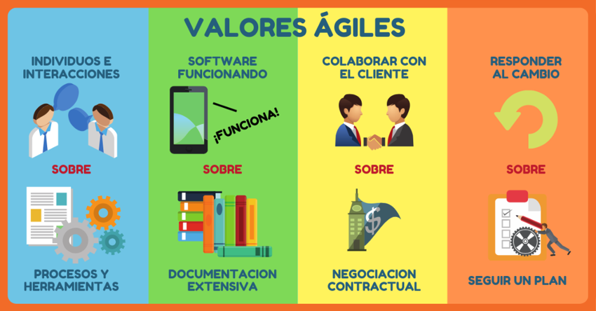
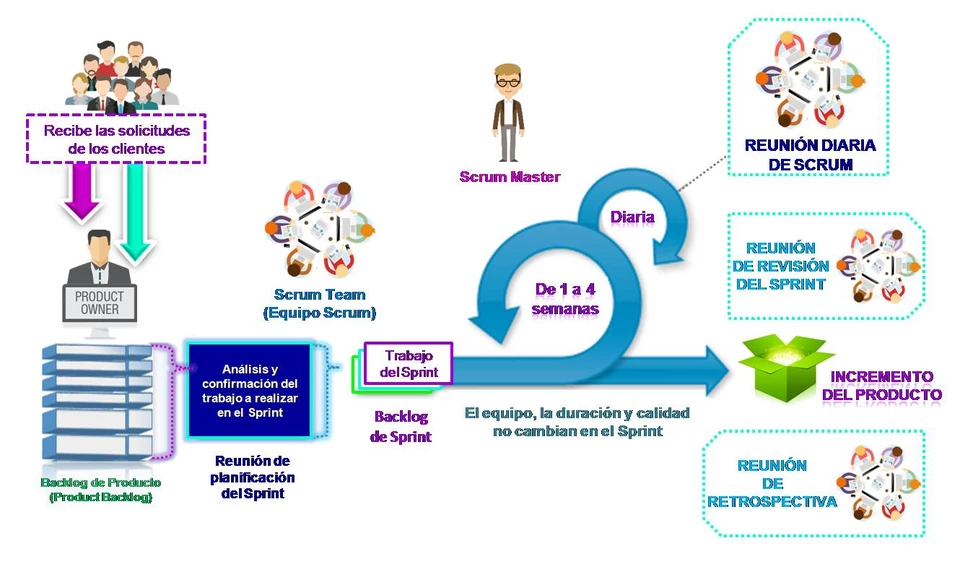
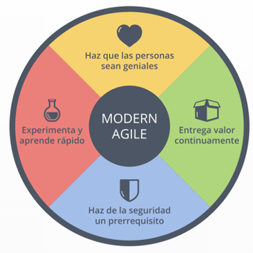

San Andrés Tetepilco
Escuela de código
Metodologías ágiles
¿Qué son las metodologías ágiles?
Son un conjunto de tareas y procedimientos relacionados con la gestión de proyectos.
Nacieron de la necesidad de afrontar cambios constantes en los negocios y la tecnología. Para poder adaptar requisitos y soluciones que evolucionan para adaptarse.
Características:
- Desarrollo evolutivo y flexible.
- Autonomía de los equipos
- Planificación
- Comunicación
¿Qué tipo de proyectos pueden manejarse con metodologías ágiles?
- Proyectos donde el cliente no tiene claros todos los requerimientos
- Proyectos donde el alcance o el presupuesto pueden cambiar
- Prácticamente cualquier proyecto que tenga que lidiar con algún tipo de incertidumbre
4 valores
eXtreme Programming
Se basa en buenas prácticas de desarrollo de software y se para minimizar posibilidades de error. Enfocada en retroalimentación continua entre el equipo de desarrollo y el cliente.
Proyectos con condiciones muy variables o ambiguas, con entregas muy rápidas.
Características:
- Versiones parciales
- Diseño simple
- Ritmo de trabajo constante
- Integración continua
- Código claro y simple
Requiere de programadores con experiencia.
Kanban
Significa Tarjeta Visual. Se controla el avance del trabajo como en una línea de producción. Cada tarea tiene un estatus y se utiliza un tablero para representar el flujo de trabajo.
Su objetivo es mejorar la eficiencia del equipo y por eso el flujo de trabajo tiene que estar siempre visible.
Permite observar de forma clara qué se está haciendo.
Se pueden poner muchas columnas, hay una lectura fácil de los indicadores y se puede realizar un seguimiento en el tiempo.
Es importante limitar la cantidad de trabajo en proceso, evitar no terminar tareas.
Scrum
Es un marco de trabajo donde el producto se libera de forma periódica, de forma iterativa e incremental, aplica buenas prácticas en el trabajo colaborativo.
Se realizan entregas regulares y parciales llamadas Sprint, que tienen prioridad establecida previamente según el beneficio que aporten al cliente. Indicado para proyectos en entornos complejos.
El equipo Scrum
Reuniones
- Planificación: Al inicio de cada sprint, para planificar la cantidad de trabajo que el equipo se va a comprometer a construir.
- Diaria: Máximo 15 minutos. Qué se hizo ayer, qué se hará hoy y qué problemas han surgido.
- Revisión: Se exponen los puntos completados y los que no.
- Retrospectiva: Al final del sprint, el equipo reflexiona y obtiene posibles acciones de mejora.
Ventajas
Ventajas
- Flexibilidad en los procesos
- Retroalimentación constante del cliente
- Transparencia
- Interacciones entre el equipo y con el cliente